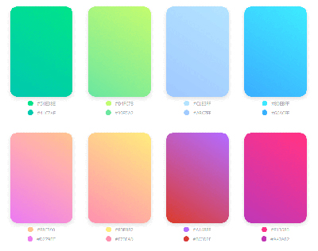

CSS Color-Mix()
While looking through web design articles, I found this article on CSS Color-Mix(). It seemed interesting, because I often struggle to make a simple and cohesive color palette for various designs. The color-mix() function blends two colors together, and could be used to simplify color palettes.
I learned that designers can use CSS tools like color-mix(), color-contrast(), lighten(), darken(), and more to create design systems and themes. This is a topic I'd like to learn more about: design systems and how CSS can be used for that.
